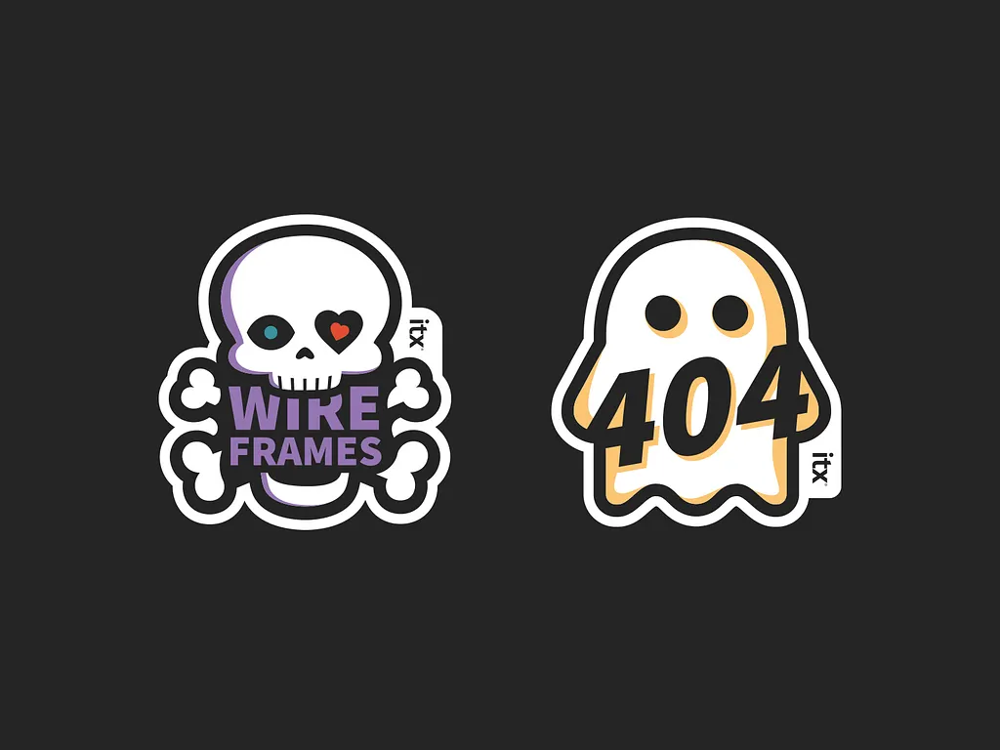
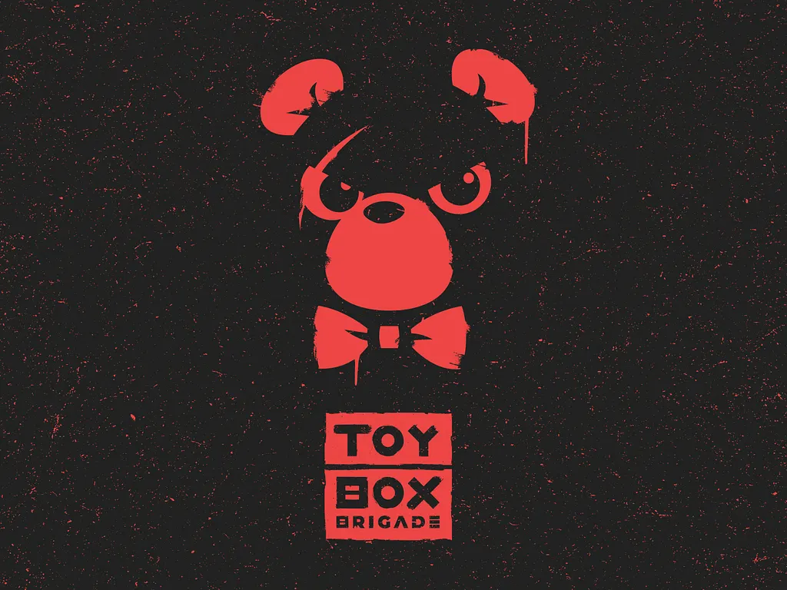
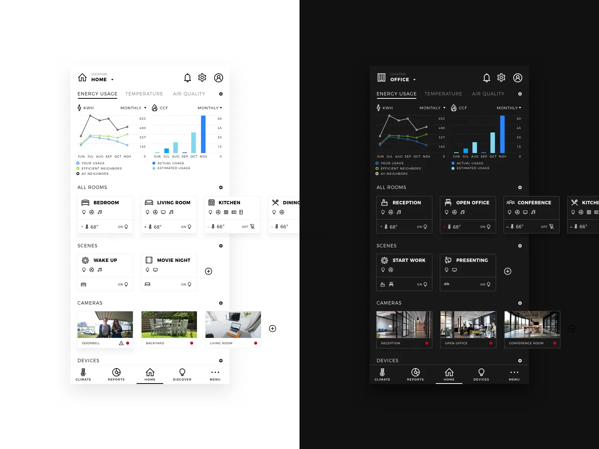
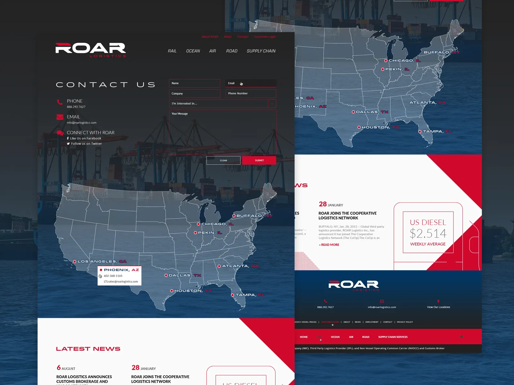

Healthcare Search Platform
- Accessibility
- Development
- UI + UX
I am a designer specializing in product design (UI+UX), accessibility (CPACC Certified), and branding based in Buffalo, NY. I build out of Coderre.Design and work with ITX solving problems and delivering results for people and organizations of many shapes and sizes. For more on my experience and a copy of my resume, head to my about page.
A tiny selection of not-so-top-secret projects I have worked on.

View a list of past and present projects and case studies.
A few projects I have worked on for the design community.
Use this Figma-based checklist in your next design project to help ensure you are meeting web accessibility guidelines.

A blank variable and style framework to kickstart your design projects.
Two minimalist experiments where I'm recreating the classic games of breakout and tetris in the browser. Both of which will continue to grow in features and evolve.
A minimalist experiment where the current time becomes a living hex color.
A few musings and articles I've written on design, accessibility, along with a few projects and experiments.
I have compiled a go-to reference list of shortcuts that I use to make my workflow more efficient.
This is a step-by-step guide to building a design system from scratch with notes and guidance on accessibility
Code snippets, design experiments, and past project highlights.
|  |  |
|---|---|
|  |  |
A few kind words and awards.
Gold + Silver ADDYs
AAF Buffalo
Honorable Mention Award for Websites
Institutional Home Page Category
CASE
Top HR Product Award
Human Resources Executive
Pinnacle Award Finalist
Website Category
AMA Rochester
When a client's designer left a few weeks ago, one of the UX Managers specifically asked for Tyler to be put on one of his projects because he "needed a strong designer, capable of complex problem solving". Tyler already had quite a bit on his plate but stepped up, and has been going above and beyond to do the work needed to cover everything he was allocated. Thank you Tyler! Your hard work and dedication is recognized and appreciated!
Nancy N.
It's been a true pleasure to watch you immediately engage with our client team members. I am grateful for the elegance and professionalism that you and (previous designer) brought to your transition... And I and the whole team - client's included - are thrilled to have you aboard! Looking forward to seeing all of your creative facets!
Roberta O.
Tyler's a master of design who moved Heaven and Earth to deliver on an urgent logo request from our client. ~150 logo files in every conceivable format, safely delivered: he's a legend, folks!
Tim S.
"I love that you are thinking about accessibility and giving us options, especially as we approach our new brand." "I love this design." "With the abilities Tyler has, and the ideas he is bringing in, I think we will find efficiency." Tyler impressed the client's development team with his design language presentation today, and it was a great step to deepening our relationship with the client and embedding further onto their teams. Great work Tyler, keep it up!
Andrew K.
I wanted to thank Tyler for the design of the ITX Product + Design Conference stickers this year! Not only were these stickers fun, and inspiring, but were also reflective of our accessible and inclusive culture that we are focused on here at ITX. The team and our guests of the event LOVED them, and I cannot wait to add them to my laptop to show them off!
Stephanie C.
Tyler is by far one of the most talented designers that I have had the pleasure of working with. We have worked on several projects together that have included significantly complex design requirements from clients, and Tyler has delivered stunning visual architectures that hit the mark each and every time. His ability to produce impressive design layouts in extremely tight turnaround times is nothing less than remarkable. Within Buffalo's design community, Tyler is a valuable asset to his peers and raises the bar constantly with his innovative designs.
Shehzadali I.
Tyler is an excellent web-conscious designer. He is lightning fast, and loses none of his efficiency in the process. What more could you want?
David K.
Thank you!!! I love my site and my logo SO much! Most beginners don't get to feel proud to show off their blog right away, but I'm sooo grateful you made it what it is! I get loads of compliments and I'm always like that was pretty much ALL my awesome cousin's work!
Joy S.
Tyler knocked it out of the park with the design right out the gate and then was quick to make adjustments based on our feedback. Since going live, everyone who has seen the site has been blown away as well. Tyler is great to work with and his services are a tremendous value!
Thomas W.
Not only am I proud and impressed with Tyler's work on TrollStompGaming, but I expected nothing less than his best. As with his previous position, at the Florence Nightingale Museum, he worked hard and did his best to satisfy the needs of his employers with his outstanding communication, teamwork, and time management skills.
Chad B.
Tyler is always on top of things for the website. He not only took the task of being our graphic designer, but he customized the website himself. He manages all the plug-ins and helps with content as well. He's such an important asset to the team and honestly the website wouldn't be half as great without him.
Michael P.
Some of the organizations I've had the pleasure of working with, and I'd love to add yours as well.
You can contact and connect with me through email, on Dribbble, or LinkedIn as well.